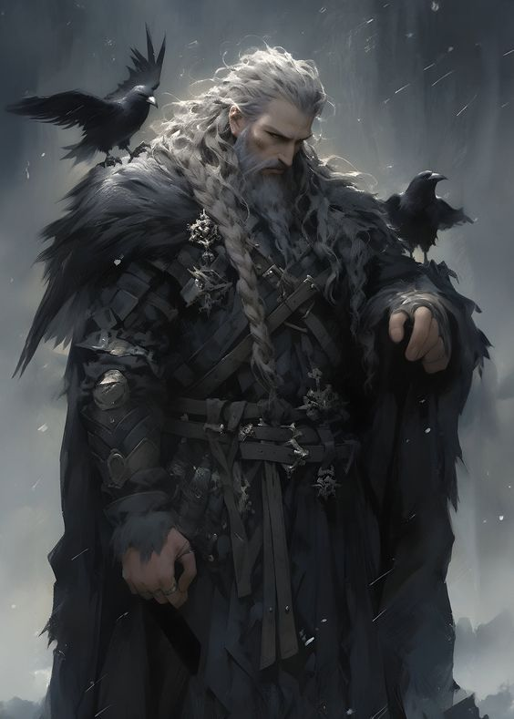
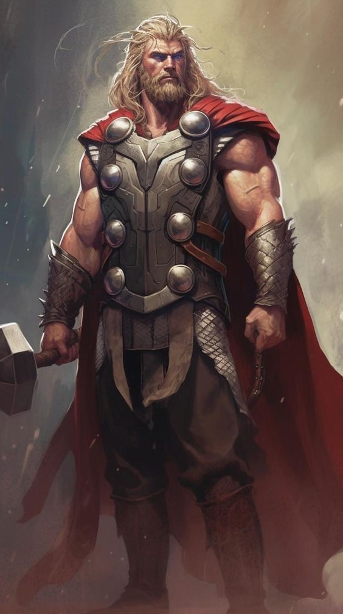
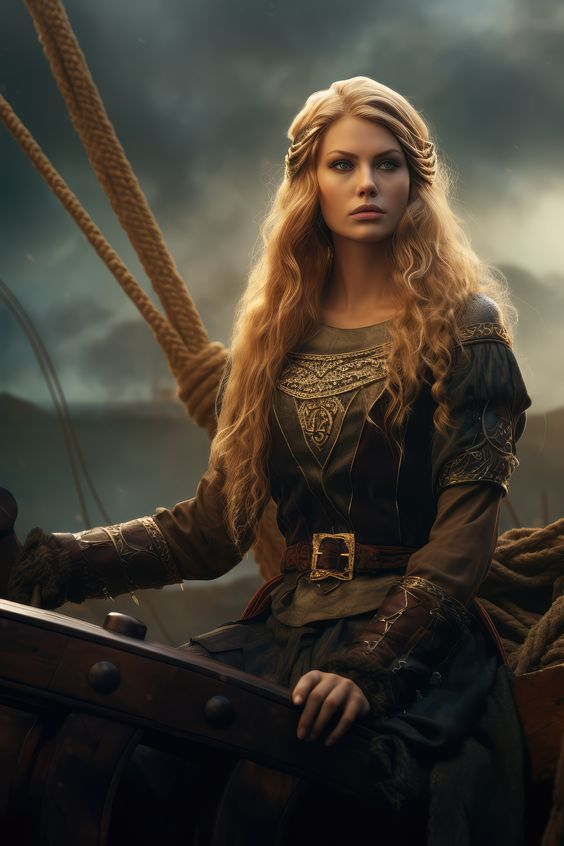
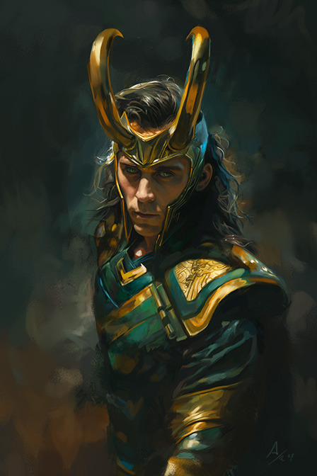

Gods and other beings
Central to accounts of Norse mythology are the plights of the gods and their interaction with various other beings, such as with the jötnar, who may be friends, lovers, foes, or family members of the gods. Numerous gods are mentioned in the source texts. As evidenced by records of personal names and place names, the most popular god among the Scandinavians during the Viking Age was Thor the thunder god, who is portrayed as unrelentingly pursuing his foes, his mountain-crushing, thunderous hammer Mjölnir in hand. In the mythology, Thor lays waste to numerous jötnar who are foes to the gods or humanity, and is wed to the beautiful, golden-haired goddess Sif.
 The god Odin is also frequently mentioned in surviving texts. One-eyed, wolf- and raven-flanked, with a spear in hand, Odin pursues knowledge throughout the nine realms. In an act of self-sacrifice, Odin is described as having hanged himself upside-down for nine days and nights on the cosmological tree Yggdrasil to gain knowledge of the runic alphabet, which he passed on to humanity, and is associated closely with death, wisdom, and poetry. Odin is portrayed as the ruler of Asgard, and leader of the Aesir. Odin's wife is the powerful goddess Frigg who can see the future but tells no one, and together they have a beloved son, Baldr. After a series of dreams had by Baldr of his impending death, his death is engineered by Loki, and Baldr thereafter resides in Hel, a realm ruled over by an entity of the same name.
 Odin must share half of his share of the dead with a powerful goddess, Freyja. She is beautiful, sensual, wears a feathered cloak, and practices seiðr. She rides to battle to choose among the slain and brings her chosen to her afterlife field Fólkvangr. Freyja weeps for her missing husband Óðr and seeks after him in faraway lands. Freyja's brother, the god Freyr, is also frequently mentioned in surviving texts, and in his association with the weather, royalty, human sexuality, and agriculture brings peace and pleasure to humanity. Deeply lovesick after catching sight of the beautiful jötunn Gerðr, Freyr seeks and wins her love, yet at the price of his future doom. Their father is the powerful god Njörðr. Njörðr is strongly associated with ships and seafaring, and so also wealth and prosperity. Freyja and Freyr's mother is Njörðr's unnamed sister (her name is unprovided in the source material). However, there is more information about his pairing with the skiing and hunting goddess Skaði. Their relationship is ill-fated, as Skaði cannot stand to be away from her beloved mountains, nor Njörðr from the seashore. Together, Freyja, Freyr, and Njörðr form a portion of gods known as the Vanir. While the Aesir and the Vanir retain distinct identification, they came together as the result of the Aesir–Vanir War.
Cosmology
In Norse cosmology, all beings live in Nine Worlds that center around the cosmological tree Yggdrasil. The gods inhabit the heavenly realm of Asgard whereas humanity inhabits Midgard, a region in the center of the cosmos. Outside of the gods, humanity, and the jötnar, these Nine Worlds are inhabited by beings, such as elves and dwarfs. Travel between the worlds is frequently recounted in the myths, where the gods and other beings may interact directly with humanity. Numerous creatures live on Yggdrasil, such as the insulting messenger squirrel Ratatoskr and the perching hawk Veðrfölnir. The tree itself has three major roots, and at the base of one of these roots live the Norns, female entities associated with fate. Elements of the cosmos are personified, such as the Sun (Sól, a goddess), the Moon (Máni, a god), and Earth (Jörð, a goddess), as well as units of time, such as day (Dagr, a god) and night (Nótt, a jötunn).
The afterlife is a complex matter in Norse mythology. The dead may go to the murky realm of Hel—a realm ruled over by a female being of the same name, may be ferried away by valkyries to Odin's martial hall Valhalla, or may be chosen by the goddess Freyja to dwell in her field Fólkvangr. The goddess Rán may claim those that die at sea, and the goddess Gefjon is said to be attended by virgins upon their death. Texts also make reference to reincarnation. Time itself is presented between cyclic and linear, and some scholars have argued that cyclic time was the original format for the mythology. Various forms of a cosmological creation story are provided in Icelandic sources, and references to a future destruction and rebirth of the world—Ragnarok—are frequently mentioned in some texts.